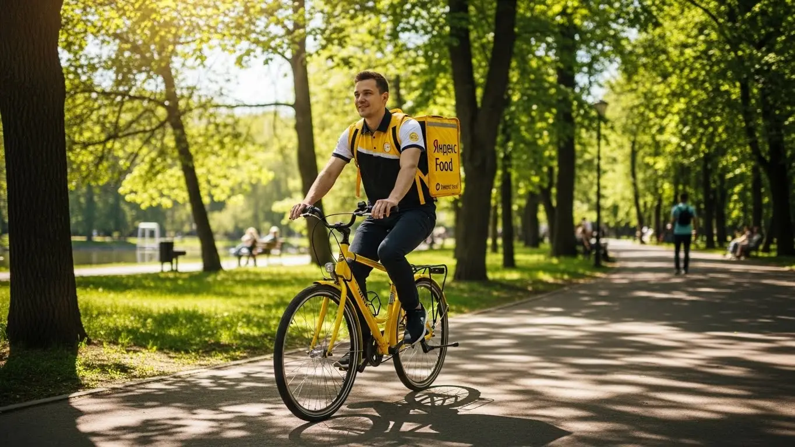
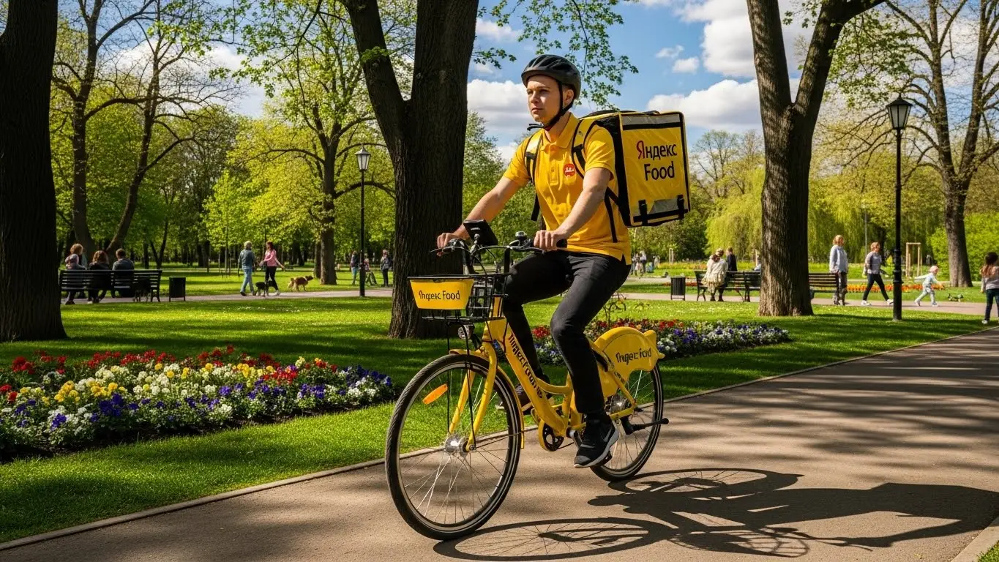
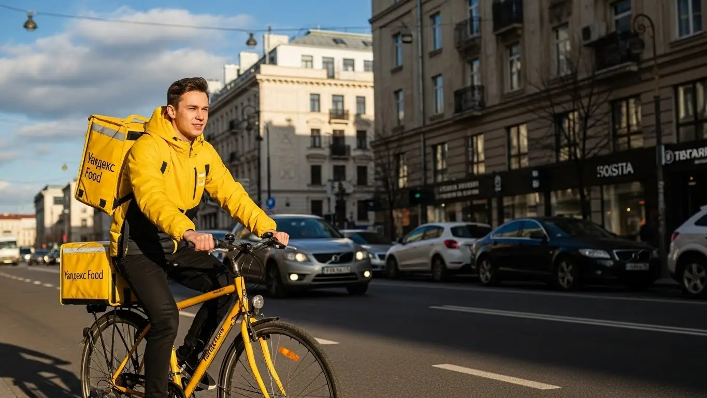
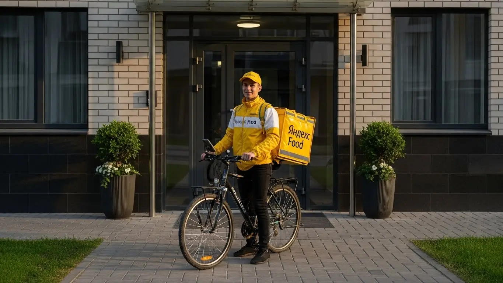

Доход курьера Яндекс Еда в Костроме: разбор условий 2025-2026
- Работа курьером Яндекс Еды в Костроме: для кого эта вакансия и что вы получите
- Сколько вы будете зарабатывать курьером в Костроме: калькулятор дохода и разбор выплат
- Реальный заработок курьера в Костроме: смены и месячный доход
- График работы и форматы занятости
- Требования к кандидату и документы
- Самозанятость, налоги и юридическая чистота
- Пошаговое оформление и первый выход на линию в Костроме
- Пешком, на вело или на авто: что выгоднее в Костроме
- Районы, маршруты и «топовые» зоны заказов в Костроме
- Безопасность, страховка, штрафы и оплата простоя
- Плюсы и возможные минусы работы курьером в Костроме
- Реальные истории и отзывы курьеров из Костромы
- Ответы на главные вопросы о работе курьером Яндекс Еды в Костроме
- Короткие ответы на главные вопросы
- Итоги и ваш следующий шаг
Все города
Здарова! Думаешь крутить педали или баранку с желтой сумкой по Костроме? И сразу в голове вопросы: а не буду ли я зарабатывать копейки, стоя в вечных пробках на мосту через Волгу? Не убью ли свою машину на наших дорогах или здоровье зимой ради пары сотен? Забудь про рекламные сказки про «доход до 100 500 тысяч». Я расскажу, как на самом деле выглядит работа курьером Яндекс Еды в Костроме — без прикрас, с реальными цифрами и фактами из нашего города.
Поверь, разница между тем, кто выходит на линию подготовленным, и тем, кто просто скачал приложение, в Костроме — это тысячи рублей в конце месяца. Дело не только в том, чтобы быстро доехать из точки А в точку Б. Это и расходы на бензин, и налог для самозанятых, и понимание, где в Давыдовском микрорайоне пик заказов, а где в центре лучше не соваться в обед из-за трафика. Большинство новичков сливаются, потому что наступают на одни и те же грабли: берут невыгодные заказы, не учитывают рельеф Заволжья или просто не знают, как работает система приоритетов. Чтобы быть во всеоружии, изучи подробные условия и требования — вся актуальная информация про работу курьером Яндекс Еда в Костроме собрана на официальной странице для кандидатов, там же можно и подать заявку.
В этом гиде мы по косточкам разберём всё: на чём выгоднее работать в Костроме — на своих двоих, велосипеде или авто. Посчитаем чистый доход с учётом всех расходов, от топлива до ремонта. Я покажу на карте самые «хлебные» районы и время для работы. Расскажу, как костромская погода — от летнего зноя до зимней каши на дорогах — влияет на заработок. И главное — объясню, за что реально штрафуют и как этого избежать, чтобы не работать в минус.
Меня зовут Алексей. Я сам откатал не одну тысячу километров по костромским улицам с термокоробом за спиной, а сейчас у меня свой небольшой таксопарк-партнёр. Я видел эту кухню со всех сторон и знаю, где система пытается тебя обмануть, а где даёт честно заработать. Так что присаживайся поудобнее, я выложу всё как есть — без рекламной шелухи, по-свойски. Сейчас всё разложу по полочкам.
Прежде чем нырять в детали, давай быстро пробежимся по ключевым моментам. Этот короткий гид поможет сориентироваться в статье.
Что ты точно узнаешь из этого разбора
В этой статье ты ТОЧНО узнаешь:
- Сколько реально можно заработать в Костроме за смену на машине, велосипеде или пешком?
- В каких районах Костромы больше всего заказов и как не кататься впустую?
- За что реально штрафуют и что такое «оплата простоя», если заказов вдруг нет?
- Как быстро оформить самозанятость и сколько налогов придётся платить с дохода?
- Как погода, время суток и выбор слотов в «Яндекс Про» влияют на итоговый заработок?
- Какой путь нужно пройти от заполнения анкеты до первого заработанного рубля?
А если тебе некогда читать всю статью — переходи сразу к заключению, где ты найдёшь короткие ответы на все эти вопросы и указания, в каких разделах искать подробности.
А чтобы сразу увидеть общую картину, вот наглядная инфографика.
Работа курьером в Костроме: цифры и факты
Доход в час
350–500 ₽
В часы высокого спроса и с учетом бонусов
Заработок за смену
2800–3600 ₽
Средний доход за полный 8-часовой слот
Свободный график
от 2 часов
Выбирайте удобные слоты и районы в приложении
Чаевые от клиентов
100% вам
Дополнительный доход, который полностью остается у вас
Работа курьером Яндекс Еды в Костроме: для кого эта вакансия и что вы получите
Кому подойдёт эта работа в Костроме
Скажем честно: эта работа не для всех, но для многих — настоящая находка. В Костроме курьером в Яндекс Еде часто идут студенты местных вузов, вроде КГУ или технологического университета. Им удобно совмещать смены с парами, выходя на линию на 3–4 часа вечером в качестве подработки. Это отличный вариант, если ты ищешь дополнительный доход и не хочешь зависеть от строгого расписания.
Эта вакансия также подойдёт тем, у кого нет опыта или специального образования. Никто не будет спрашивать про диплом или прошлые заслуги. Основные требования — быть пунктуальным, вежливым и иметь смартфон. Водители, которые ищут дополнительный заработок к такси или основной работе, тоже находят здесь свою выгоду, особенно в пиковые часы. И конечно, это работа для всех, кому деньги нужны здесь и сейчас: ежедневные выплаты решают этот вопрос.

Главные преимущества для жителей районов Заволжский, Давыдовские микрорайоны, Центральный
Одно из ключевых преимуществ — возможность работать буквально у себя под боком. Тебе не нужно тратить час-полтора на дорогу до офиса через весь город. Живёшь, к примеру, в Заволжском районе — можешь брать заказы там же, развозя еду по соседним улицам. Это экономит и время, и деньги на проезд.
То же самое касается и крупных спальных районов, таких как Давыдовские микрорайоны, где всегда много заказов из продуктовых магазинов и пиццерий, поэтому спрос стабильный. А если ты живёшь в Центральном районе, то это настоящая золотая жила: концентрация кафе и ресторанов на Советской или проспекте Текстильщиков максимальная. Вышел из дома — и через пять минут ты уже на смене, принимаешь первый заказ. Это не просто удобно, это напрямую влияет на твой итоговый заработок.
Краткое обещание по доходу и условиям
Если говорить о деньгах, то в Костроме можно рассчитывать на реальный доход. При частичной занятости, работая по 4–5 часов в день, вполне реально делать 1500–2000 рублей за смену. Если же выходить на полную занятость, 8–10 часов, то заработок может доходить и до 3500–4000 рублей. В месяц при плотном графике водитель-курьер на автомобиле может заработать 60 000–80 000 рублей.
Ключевые условия просты и понятны. Во-первых, свободный график — ты сам решаешь, когда и сколько работать, выбирая слоты в приложении Яндекс Про. Во-вторых, ежедневные выплаты — заработал сегодня, получил деньги на карту сегодня же. В-третьих, начать можно без опыта — всему необходимому научат на коротком онлайн-инструктаже. Никаких сложных собеседований и долгого ожидания.
Сколько вы будете зарабатывать курьером в Костроме: калькулятор дохода и разбор выплат
Из чего складывается доход курьера
Твоя зарплата — это не просто фиксированная ставка. Она складывается из нескольких частей, как конструктор. Основа — это оплата за выполнение заказа и доплата за расстояние от ресторана до клиента. Чем дальше везти, тем больше денег. В часы пик, плохую погоду или праздники включаются повышающие коэффициенты — они могут умножить стоимость заказа в полтора, а то и в два раза.
Кроме того, есть бонусы за выполнение определённого количества заказов в день или неделю. Клиенты часто оставляют чаевые — они полностью твои, сервис не берёт с них никакой комиссии. Важный момент, который многие упускают, — это оплата простоя. Если ты приехал в ресторан, а заказ ещё не готов, сервис начисляет компенсацию за ожидание. В некоторых случаях также может компенсироваться проезд на общественном транспорте, если маршрут длинный.
Как пользоваться калькулятором дохода
Чтобы прикинуть свой возможный заработок, не нужно гадать на кофейной гуще. В специальном калькуляторе на сайте ты можешь выбрать свой город — Кострому, и указать, кем планируешь работать: пешим курьером, на велосипеде или на личном авто. Дальше выставляешь, сколько часов в день и сколько дней в неделю готов уделять доставкам.
Прикинь свой доход в Костроме
Примерный доход в месяц:
64 000 ₽
Это примерный расчёт на основе средней ставки 400 ₽/час для Костромы. Реальный доход зависит от спроса, бонусов и вашего графика.
Этот калькулятор дает хорошую оценку, а если хочешь увидеть полные условия, актуальные требования и сразу подать заявку, загляни на страницу про работу курьером Яндекс Еда в твоём городе — там всё собрано в одном месте. На выходе калькулятор покажет примерный диапазон твоего дохода за день и за месяц. Понятно, что это прогноз, а не твёрдое обещание — реальный заработок будет зависеть от спроса и твоей скорости. Но этот инструмент даёт хорошее представление о том, на какие цифры можно ориентироваться, и помогает выбрать самый выгодный для себя формат работы.
Примеры расчёта для пешего, вело- и авто‑курьера в Костроме
Давай разберём на конкретных примерах. Пеший курьер, работающий в центре Костромы 4 часа вечером в будний день, может выполнить 8–10 заказов на короткие расстояния. Его заработок составит примерно 1200–1500 рублей. Идеально для студента после пар.
Велокурьер, который катается 6–7 часов и захватывает не только центр, но и спальные районы вроде Давыдовских, за счёт скорости выполнит уже 15–20 заказов. За смену его доход может составить 2200–2800 рублей. Это уже похоже на полноценную работу с хорошей физической нагрузкой.
Водитель-курьер на своём авто за 8-часовую смену может покрыть весь город, включая отдалённые заказы в Заволжский район или пригород. Он берёт большие и дорогие заказы, особенно в непогоду. Его заработок за день может достигать 3500–4500 рублей. Даже с учётом расходов на бензин остаётся очень приличная сумма.
Реальный заработок курьера в Костроме: смены и месячный доход
Давай к самому главному — к деньгам. Никто не идёт в курьеры ради романтики, все хотят понимать, сколько можно положить в карман. Цифры в рекламе часто красивые, но я расскажу, как обстоят дела в Костроме на самом деле, без прикрас. Заработок зависит от трёх вещей: как ты работаешь (пешим, на велосипеде или на авто), сколько времени тратишь и насколько с головой подходишь к делу.
В среднем, активный курьер в Костроме делает 2–4 заказа в час. Стоимость заказа плавает, но с учётом бонусов и коэффициентов получается неплохо. Главное — не сидеть на месте и понимать, где и когда есть спрос. Дальше разберём всё по полочкам.

Диапазон дохода для подработки и полной занятости
Если ты ищешь подработку на 2–4 часа в день, например, после учёбы или основной работы, цифры будут примерно такие. Пеший курьер в центре за вечер может сделать 600–1200 рублей. Велокурьер за то же время заработает больше за счёт скорости — где-то 800–1600 рублей. Курьер на своем авто самый мобильный, его доход за короткую смену — 1200–2200 рублей, особенно если брать заказы на дальние расстояния. В месяц на подработке выходит от 15 000 до 40 000 рублей, в зависимости от транспорта и количества смен.
При полной занятости, когда ты на линии по 8–10 часов, доход совсем другой. Пеший курьер может рассчитывать на 2500–3500 рублей в день. Курьер на велосипеде — на 3000–4500 рублей. Водитель на своей машине при полной загрузке и правильном выборе зоны может увозить и 4000–6000 рублей в день. В месяц это выливается в 50 000–75 000 рублей для пеших и велокурьеров, и до 90 000–110 000 рублей для водителей-курьеров. Такая зарплата реальна, если работать почти без выходных и ловить пиковые часы.
Как район, время суток и погода влияют на доход
Запомни простое правило: твой заработок — это спрос. Где больше людей хотят есть и делать покупки, там больше денег. В Костроме пиковые часы — это обед (с 12:00 до 14:00) и вечер (с 18:00 до 21:00), а также все выходные и праздничные дни. В это время в приложении «Яндекс Про» карта горит фиолетовым — это зоны с повышенными коэффициентами. Заказ, который обычно стоит 150 рублей, с коэффициентом может стоить 250–300.
Погода — твой лучший друг. Как только начинается дождь, снегопад или сильная жара, большинство курьеров прячутся по домам, а количество заказов взлетает. Коэффициенты могут быть х2 и даже х3. Плюс, люди в такую погоду охотнее оставляют чаевые, потому что ценят твой труд. Самые «хлебные» районы — это, конечно, центр (улицы Советская, Симановского), где много кафе, и крупные спальные районы вроде Давыдовских микрорайонов или Заволжский район, где много жилых домов и ТЦ, например, «Коллаж» и «РИО».
Советы по увеличению заработка от опытных курьеров
Чтобы зарабатывать больше, а уставать меньше, нужно работать умнее, а не дольше. Во-первых, всегда планируй смены заранее и старайся брать плановые слоты в зонах с высоким спросом. Так у тебя будет гарантия минимального дохода, даже если заказов вдруг станет меньше. Во-вторых, не брезгуй маленькими заказами на короткие расстояния, особенно если ты пеший или на велосипеде. Из них складывается неплохая сумма за час.
Водителям-курьерам советую не стоять в центре в пробках, а выбирать зоны, охватывающие несколько районов, например, Фабричный и Заволжский. Так ты сможешь выполнять и короткие, и длинные дорогие заказы. Если есть возможность, сочетай форматы: летом гоняй на велосипеде — это быстро и экономно, а зимой или в плохую погоду пересаживайся на машину. И главный совет: будь вежлив с клиентами. Хорошее отношение часто превращается в хорошие чаевые, которые могут составлять до 10–15% твоего дохода.
Вот реальный кейс: парень-студент на старенькой «девятке» решил подработать. Сначала катался хаотично по всему городу, жег бензин, а зарабатывал копейки. Потом я ему посоветовал брать вечерние слоты с 19:00 до 23:00 и работать чисто по Заволжскому району. Там и новостройки, и частный сектор — заказы есть всегда. В итоге за 4 часа он стал стабильно привозить 1800–2500 рублей «грязными», тратя на бензин 300–400 рублей.
Сравнение примерного дохода в Костроме
| Тип занятости | Пеший курьер | Велокурьер | Автокурьер |
|---|---|---|---|
| Подработка (2-4 часа/день) | 600 – 1 200 ₽/смена | 800 – 1 600 ₽/смена | 1 200 – 2 200 ₽/смена |
| Полная занятость (8-10 часов/день) | 2 500 – 3 500 ₽/смена | 3 000 – 4 500 ₽/смена | 4 000 – 6 000 ₽/смена |
| Примерный доход в месяц (полная занятость) | 50 000 – 75 000 ₽ | 60 000 – 90 000 ₽ | 80 000 – 110 000 ₽ |
В итоге, реальный заработок в Костроме напрямую зависит от твоего подхода. Можно просто выходить на линию и ждать заказов, а можно анализировать спрос, погоду и выбирать выгодные слоты. Советую всегда следить за картой коэффициентов в приложении и не бояться работать, когда другие отдыхают — именно тогда и делаются самые большие деньги.
График работы и форматы занятости
Одно из главных преимуществ этой работы — гибкость. Ты сам себе начальник и сам решаешь, когда и сколько работать. Нет никаких обязательных планов или смен с 9 до 18. Это идеальный вариант, если тебе нужна подработка, которую легко совмещать с учёбой или основной работой. Вся система построена на слотах — временных интервалах, которые ты выбираешь в приложении «Яндекс Про». Можешь взять слот на 2 часа или на 12, работать каждый день или только по выходным.

Подработка после учёбы или основной работы
Совмещать проще простого. Вот пара реальных примеров из Костромы. У меня работает студент из КГУ, живёт в центре. Он заканчивает учиться в 15:00, отдыхает, а с 18:00 до 22:00 выходит на пешие смены. Работает 4-5 дней в неделю, чисто в центральном районе. За вечер спокойно делает 1000–1500 рублей. В месяц у него набегает 20–25 тысяч — отличная прибавка к стипендии.
Другой пример — мужчина, работает в офисе пятидневку до 17:00. У него своя машина. В пятницу вечером и в субботу он берёт слоты по 5-6 часов и катается по заказам в Давыдовском и Юбилейном. За два таких выхода он зарабатывает 5000–7000 рублей. Это позволяет ему и кредит за машину гасить, и на семью остаётся. Главное — не переутомляться и выбирать время, когда есть силы и желание.
Полная занятость: как выглядит типичный день курьера
Если ты решил сделать доставку основной работой, твой день будет выглядеть примерно так. Утром, часов в 10, ты открываешь «Яндекс Про», смотришь карту спроса и выбираешь зону. Опытные ребята не начинают с самого утра, а выходят ближе к обеденному пику, чтобы не тратить время зря. Например, начинаешь в 11:00 в спальном районе типа Паново, выполняешь пару заказов.
К 12:30–13:00 смещаешься в центр, где начинаются обеденные заказы из кафе и ресторанов. Работаешь плотно до 15:00, потом спрос падает. Это идеальное время для перерыва: можно пообедать, отдохнуть, заправить машину. С 17:30 снова выходишь на линию, начинается вечерний пик, который длится до 21:00–22:00. Это самое прибыльное время. За такой день с перерывами ты активно работаешь 8-9 часов и можешь заработать от 3000 до 5000 рублей, в зависимости от дня и транспорта.
Как планировать слоты и выходы через приложение «Яндекс Про»
«Яндекс Про» — твой главный рабочий инструмент. В нём ты видишь карту города, разделённую на зоны. В разделе «Расписание» можно посмотреть доступные плановые слоты на несколько дней вперёд. Я настоятельно рекомендую пользоваться именно ими, особенно новичкам. Выбирая плановый слот, ты бронируешь себе место в определённой зоне на конкретное время, и сервис часто предлагает за это бонусы или минимальную гарантированную оплату.
Чтобы выбрать слот, просто открой расписание, выбери подходящий день, зону и время, и нажми «Запланировать». Важно: на плановый слот нельзя опаздывать. Приехать в выбранную зону нужно за несколько минут до начала. Если опоздаешь, слот могут отменить, а твой показатель «Активность» снизится. Высокая Активность даёт приоритет в распределении заказов, поэтому дисциплина напрямую влияет на твой доход.
Вот наглядный пример из практики. Один из моих водителей постоянно жаловался на малое количество заказов. Стали разбираться. Оказалось, он просто выходил на линию в свободном режиме, когда ему вздумается, и ждал у моря погоды. Я показал ему, как за 3-4 дня вперёд бронировать самые «жирные» вечерние слоты в зонах с высоким спросом. Через неделю он позвонил и сказал, что заработок вырос почти в полтора раза, потому что заказы пошли один за другим.
В общем, свободный график — это круто, но он требует самодисциплины. Используй «Яндекс Про» для планирования, не опаздывай на слоты, и тогда у тебя будет стабильный и предсказуемый доход. Это не просто работа «когда захотел», а работа «когда запланировал», и в этом вся разница.
Требования к кандидату и документы
Возраст, гражданство и базовые условия
Давай сразу по делу. Чтобы стать курьером Яндекс Еды в Костроме, тебе должно быть полных 18 лет. Это одно из главных условий, связанное с материальной ответственностью и необходимостью оформить самозанятость. К сожалению, для кандидатов с 16 лет исключений нет. По гражданству тоже всё чётко: нужен паспорт РФ или одной из стран ЕАЭС — это Беларусь, Казахстан, Армения, Киргизия.
Что касается физической формы, никто не требует олимпийских рекордов. Если ты пеший курьер, будь готов много ходить, в том числе по лестницам в домах без лифта. Для велокурьера важна выносливость, особенно если планируешь доставлять заказы между центром и спальными районами вроде Давыдовского. Водителю-курьеру физически проще, но нужна предельная внимательность за рулём. Главное — адекватно оценивать свои силы и не брать смены по 12 часов в первый же день.
Какие документы нужны для работы курьером
Здесь всё проще, чем кажется. Многие думают, что придётся собирать кипу бумаг, но на деле для оформления нужен базовый набор, который у большинства и так под рукой. Подготовь всё заранее, чтобы процесс регистрации пошёл быстрее.
Вот что тебе понадобится:
- Паспорт. Основной документ для подтверждения личности и возраста. Нужны будут фото или сканы главной страницы и прописки.
- ИНН (Идентификационный номер налогоплательщика). Он необходим для регистрации в качестве самозанятого. Если не помнишь свой номер, его можно за пару минут узнать на сайте ФНС.
- Банковская карта. Любая карта российского банка, оформленная на твоё имя. На неё будут приходить все выплаты. Важно, чтобы это была именно твоя личная карта, а не друга или родственника.
- Медицинская книжка. Требуется не всегда, но может понадобиться для работы с определёнными ресторанами или магазинами. Если её нет, не страшно — начать можно и без неё, а сервис подскажет, когда и как её лучше оформить.
Как видишь, ничего сверхъестественного. Собрать этот пакет документов можно за полчаса, не выходя из дома.
Можно ли работать с 16 лет и какие есть альтернативы
Отвечу честно и прямо: устроиться в Яндекс Еду курьером с 16 или 17 лет нельзя. Минимальный возраст для этой работы — 18 лет. Это связано с юридическими тонкостями: подработка предполагает статус самозанятого, который можно оформить только с совершеннолетия, а также полную материальную ответственность за заказы и термокороб. Сервис не может рисковать и брать на себя сложности с трудоустройством несовершеннолетних.
Если тебе ещё нет 18, а подзаработать хочется, не отчаивайся. Рассмотри другие варианты, доступные подросткам в Костроме. Например, можно поискать вакансии промоутера, раздавать листовки у ТРЦ «Коллаж» или «РИО», или устроиться помощником в небольшие местные кафе. Это, конечно, не та свобода и гибкость, что у курьера, но тоже легальный способ получить первый опыт и заработать карманные деньги, пока не исполнится 18.
Из практики: ко мне как-то пришёл устраиваться парень, 20-летний студент из КГУ. Он хотел подрабатывать водителем-курьером на своём авто. Больше всего переживал из-за документов, думал, что оформление — это долго и муторно. Я ему объяснил, что нужен только паспорт, ИНН, права и СТС. Он зашёл на Госуслуги, нашёл свой ИНН за минуту, сфотографировал документы на телефон, и через час его анкета уже была на проверке. На следующий день он вышел на линию. Вся «бумажная волокита» заняла меньше времени, чем одна пара в универе.
В общем, условия работы курьером в Яндекс Еде вполне стандартные. Главное — быть совершеннолетним, иметь нужные документы и желание работать. Советую сразу проверить, есть ли у тебя под рукой ИНН и активна ли банковская карта — это сэкономит время при регистрации.
Самозанятость, налоги и юридическая чистота
Почему курьеры Яндекс Еды работают как самозанятые
Многих пугают слова «самозанятость» и «налоги», но на деле это самый простой и выгодный формат, чтобы работать курьером официально. Самозанятость (или налог на профессиональный доход, НПД) — это специальный налоговый режим, который позволяет легально получать доход, не открывая ИП и не вдаваясь в сложную бухгалтерию. Ты работаешь сам на себя и платишь небольшой налог с заработка.
Для тебя как для курьера это огромный плюс. Во-первых, твой доход полностью официальный. Это значит, ты можешь, например, взять кредит или подтвердить свой заработок для получения визы. Во-вторых, всё максимально прозрачно и автоматизировано. Не нужно нанимать бухгалтера или заполнять декларации — все расчёты происходят в приложении. Это легальная подработка, которая даёт уверенность и защищённость, в отличие от «серых» схем с оплатой наличкой в конверте.
Как за 10 минут оформить самозанятость через «Мой налог»
Процесс регистрации проще, чем заказать пиццу. Забудь про походы в налоговую и очереди. Всё делается онлайн через официальное приложение ФНС «Мой налог». Я сам помогал десяткам водителей и курьеров с этим, и дольше 15 минут это никогда не занимало.
Вот пошаговая инструкция по оформлению:
- Скачай приложение «Мой налог» из Google Play или App Store. Оно бесплатное и официальное.
- Выбери способ регистрации. Самый простой — по паспорту РФ.
- Отсканируй паспорт. Просто наведи камеру телефона на главный разворот, и приложение само распознает все данные.
- Сделай селфи. Приложение попросит тебя моргнуть или улыбнуться, чтобы подтвердить, что ты — это ты.
- Подтверди регистрацию. Проверь данные и нажми кнопку. Всё, через несколько минут придёт уведомление, что ты официально стал самозанятым.
Никаких госпошлин, никаких заявлений. Весь процесс интуитивно понятен и занимает от силы 10 минут. После этого останется только привязать свой статус в приложении для курьеров «Яндекс Про», и можно начинать работать.
Сколько и как платить налоги
Это самый главный вопрос, который волнует новичков. Система максимально простая. Налог для самозанятых курьеров зависит от того, от кого приходят деньги. При работе с юридическими лицами, как Яндекс Еда, ставка составляет 6% от дохода. Никаких других скрытых сборов или отчислений нет.
Процесс уплаты налога полностью автоматизирован. Тебе не нужно ничего считать вручную. Приложение «Яндекс Про» само передаёт данные о твоём заработке в налоговую. В начале следующего месяца в приложении «Мой налог» появляется квитанция с итоговой суммой налога за прошлый месяц. Тебе остаётся только оплатить её до 28-го числа. Это можно сделать прямо в приложении с банковской карты, без комиссии. Гораздо проще и безопаснее, чем работать неофициально и постоянно переживать о возможных проверках.
У меня был знакомый, который раньше подрабатывал на стройке в Костроме, получал деньги «вчёрную». Вечно дёргался, что обманут с оплатой, да и на будущее ничего не откладывалось. Когда он решил стать курьером на своем авто, его сначала тоже напрягла самозанятость. Но я ему показал на своём примере: вот приложение, вот доход, вот налог списался. Он зарегистрировался, начал работать. Через пару месяцев пришёл довольный: говорит, впервые в жизни чувствует себя спокойно. Доход официальный, всё чисто, а налог в 6% — это небольшая плата за стабильность.
Итог по этому блоку простой: самозанятость — это не страшно, а удобно. Она создана специально для тех, кто хочет работать на себя, но не возиться с бумагами. Мой совет: не ищи «серых» партнёров, которые обещают платить наличкой. Оформляй всё официально, плати небольшой налог и работай курьером спокойно, зная, что твой заработок полностью легален.
Пошаговое оформление и первый выход на линию в Костроме
Многих новичков пугает процесс оформления: кажется, что это долго, сложно и потребует кучи бумаг. На деле же всё устроено так, чтобы ты мог как можно быстрее начать зарабатывать на доставках, даже если у тебя нет опыта. Весь процесс отлажен, проходит в основном онлайн и занимает от нескольких часов до одного дня. Никаких долгих собеседований и недельных проверок — заполнил анкету, прошёл инструктаж, получил экипировку и вперёд, на линию.

Шаг 1–2: анкета и онлайн‑обучение
Первым делом ты заполняешь короткую анкету на сайте. Вопросы там стандартные: ФИО, дата рождения, гражданство, номер телефона. Это займёт не больше 10–15 минут. После этого твои данные уходят на быструю проверку, которая обычно занимает не больше часа. Главное — вводить всё без ошибок, как в паспорте.
Как только анкету одобрят, тебе откроется доступ к короткому онлайн-обучению. Не пугайся, это не лекции в институте. Тебе покажут несколько видеороликов о том, как пользоваться приложением «Яндекс Про», как правильно общаться с клиентами и представителями ресторанов и что делать в нестандартных ситуациях. После каждого блока — небольшой тест из нескольких вопросов, чтобы убедиться, что ты понял базовые правила сервиса и безопасности.
Шаг 3: получение термосумки и доступа к заказам в Костроме
Без фирменной термосумки (или термокороба для автокурьеров) работать нельзя — это главное правило, которое обеспечивает сохранность заказов. После успешного прохождения обучения тебе нужно будет её получить. В Костроме это обычно делается через курьерские центры или офисы партнёров сервиса. Не нужно самому искать адреса — в приложении «Яндекс Про» появится карта с доступными точками и их графиком работы.
Приезжаешь в указанное место, показываешь документы, получаешь свою жёлтую или чёрную сумку, и всё — твой аккаунт полностью активируют. С этого момента ты официально становишься курьером-партнёром сервиса и видишь в приложении доступные заказы. Некоторые партнёры даже предлагают доставку экипировки, что ещё удобнее.
Шаг 4: первый слот и первый доход
Теперь самое интересное — первый выход на линию. Открываешь «Яндекс Про», выбираешь на карте район Костромы, в котором хочешь работать, и бронируешь свой первый слот. Слот — это запланированный отрезок времени для доставок, например, с 18:00 до 22:00. Для начала советую выбрать знакомый тебе район и взять короткий слот на 3-4 часа, чтобы втянуться в процесс без спешки.
Как только твой слот начнётся, ты выходишь на линию (нажимаешь кнопку в приложении), и тебе начинают поступать заказы. Приложение само построит маршрут до ресторана, а потом до клиента. Выполнил заказ — деньги сразу же отображаются на твоём балансе в «Яндекс Про». Это основа системы ежедневных выплат: заработал — получил. Так, уже в первый день работы ты увидишь свой первый реальный доход.
Из практики: мой знакомый парень, студент, решил подработать. В понедельник утром заполнил анкету, к обеду прошёл обучение. После пар заехал в офис партнёра на Советской, забрал сумку. Вечером того же дня взял слот на 4 часа в Центральном районе, выполнил 7 заказов и заработал свои первые 1200 рублей. Вся процедура от заявки до первых денег заняла у него меньше 10 часов.
В итоге, весь процесс оформления максимально упрощён и нацелен на быстрый старт. Главное — не затягивать с получением сумки после обучения. Чем быстрее ты её заберёшь, тем быстрее начнёшь превращать своё время в реальные деньги.
Пешком, на вело или на авто: что выгоднее в Костроме
Выбор транспорта — одно из ключевых решений, которое напрямую влияет на твой заработок и комфорт. В Костроме у каждого способа доставки есть свои сильные и слабые стороны, зависящие от районов, трафика и твоих личных целей. Нет универсально «лучшего» варианта, есть тот, который подходит именно тебе и под конкретные условия города.
Пеший курьер: для центра и плотной застройки в Костроме
Если ты планируешь работать в самом сердце города, то пеший курьер — отличный выбор. В историческом центре Костромы, в районе Сусанинской площади, улиц Советской, Симановского, Ленина, очень много кафе и ресторанов. Расстояния между точками А (ресторан) и Б (клиент) часто не превышают 1-2 километров. На машине здесь делать нечего из-за пробок, узких улиц и проблем с парковкой, а пешком ты доставишь заказ быстрее и без лишних нервов.
Такой формат идеален для тех, кто хочет совмещать подработку с прогулкой, не имеет своего транспорта или не хочет тратиться на его обслуживание. Да, ты не сможешь брать дальние заказы, но в центре их плотность настолько высока, что без работы сидеть не будешь. Главный минус — сильная зависимость от погоды и физическая выносливость.
Велокурьер: быстрые доставки между спальными районами
Работа велокурьером — это золотая середина между скоростью и затратами. Для Костромы это особенно актуально при работе в крупных спальных районах, таких как Давыдовский микрорайон или Заволжский район. Здесь расстояния уже больше, чем в центре, и пешком много не находишь. Велосипед же позволяет быстро перемещаться между кварталами, срезать путь через дворы и парки, игнорируя пробки на основных магистралях вроде проспекта Мира или улицы Магистральной.
По сути, это оплачиваемый фитнес. Ты не тратишься на бензин и проезд, поддерживаешь себя в форме и при этом зарабатываешь больше пешего курьера за счёт скорости. Велосипед даёт мобильность и позволяет охватить большую территорию, а значит, выполнить больше заказов за то же время.
Водитель‑курьер: заказы по всему городу и пригороду Караваево, Никольское
Личный автомобиль открывает доступ к самым выгодным заказам. Это доставка в отдалённые районы, поездки в пригород, например, в Караваево или Никольское, а также крупные заказы из гипермаркетов. Водитель-курьер не привязан к одному району и может работать по всему городу, оперативно перемещаясь туда, где сейчас самые высокие коэффициенты.
Особенно выгодно работать курьером на своем авто в плохую погоду (дождь, снегопад), когда количество пеших и велокурьеров на линии резко сокращается, а спрос на доставку взлетает. Да, есть расходы на бензин и амортизацию, но они с лихвой окупаются большим количеством и высокой стоимостью заказов. Если у тебя есть машина и ты хочешь зарабатывать по максимуму, это твой вариант.
Сравнение форматов доставки в Костроме
| Параметр | Пеший курьер | Велокурьер | Водитель-курьер |
|---|---|---|---|
| Зоны работы | Центр, плотная застройка (ул. Советская, Ленина) | Спальные районы (Давыдовский, Заволжский), центр | Весь город, пригород (Караваево, Никольское) |
| Средний доход | Базовый | Средний | Высокий |
| Плюсы | Нет расходов на транспорт, полезно для здоровья, идеален для центра | Скорость, маневренность, обход пробок, низкие расходы | Дальние и дорогие заказы, комфорт в любую погоду, большие заказы |
| Минусы / Расходы | Низкая скорость, ограниченный радиус, зависимость от погоды | Физическая нагрузка, сезонность, нужен свой велосипед | Расходы на бензин и обслуживание авто, пробки, парковка |
Мой совет: начинай с того, что у тебя есть под рукой. Если живёшь в центре и любишь ходить — попробуй формат пешего курьера. Есть велосипед — отлично, твоя зона работы сразу расширяется. А если есть личный автомобиль, то не сомневайся — это самый прибыльный вариант для работы. В приложении «Яндекс Про» всегда можно сменить тип доставки и поэкспериментировать, чтобы найти то, что выгоднее именно для тебя.
Районы, маршруты и «топовые» зоны заказов в Костроме
Где больше всего заказов: ТРЦ, бизнес‑центры и туристические места
Чтобы понимать, где в Костроме сосредоточен основной доход, нужно знать три типа «рыбных» мест. Во-первых, это крупные торговые центры. В первую очередь смотри на ТРЦ «Коллаж» на Красносельском шоссе и ТРЦ «РИО» на Магистральной. Там всегда полно заказов из фуд-кортов и магазинов, особенно в обеденное время, по вечерам и в выходные. Люди заказывают доставку и домой, и в офисы поблизости.
Во-вторых, это деловой и исторический центр города. Улицы Советская, Ленина, проспект Текстильщиков — здесь сосредоточены офисы, банки и госучреждения. С 12 до 15 часов идёт стабильный поток заказов на бизнес-ланчи. Кроме того, в центре много популярных ресторанов, которые работают только на доставку.
Третий тип — туристические зоны, особенно летом. Центральная часть вокруг Сусанинской площади и набережная Волги привлекают много людей, а значит, и заказов из кафе. В этих зонах часто действуют повышенные коэффициенты, так что твой заработок за один и тот же заказ может быть в 1,5–2 раза выше.
Работа в своём районе: примеры для популярных жилых кварталов
Многие думают, что зарабатывать можно только в центре, но это не так. Мотаться через весь город не всегда выгодно, особенно если ты пеший курьер или велокурьер. В Костроме полно крупных спальных районов, где можно получать стабильный доход, работая буквально в паре километров от дома. Это экономит и время, и силы, и деньги на проезд или бензин.
Возьмём, к примеру, Заволжский район. Там огромная плотность населения, много новостроек и, соответственно, много семей, которые регулярно заказывают еду и продукты. В микрорайонах Давыдовский или в районе Паново тоже всегда есть работа: хватает и пиццерий, и суши-баров, и сетевых магазинов вроде «Пятёрочки» или «Магнита», откуда идут заказы доставки. Работая в своём районе, ты лучше знаешь все дворы и короткие пути, что даёт преимущество в скорости. Заказы могут быть не такими дорогими, как в центре, но их много, и они идут стабильным потоком, особенно в плохую погоду.
Как выбирать зоны и слоты в «Яндекс Про», чтобы не мотаться впустую
Приложение «Яндекс Про» — твой главный инструмент для планирования. Основное, на что нужно смотреть, — это карта спроса. Зоны, подсвеченные фиолетовым, — это места, где заказов сейчас больше всего и действуют самые высокие повышающие коэффициенты. Если видишь такую зону рядом, есть смысл сместиться туда. Но не стоит бездумно гнаться за каждым «фиолетовым пятном» на другом конце города — пока доедешь, ситуация может измениться.
Учись планировать маршруты. Если берёшь заказ из центра в спальный район, посмотри на карту: есть ли там поблизости рестораны или магазины, откуда может прийти следующий заказ? Старайся не уезжать в совсем глухие места, откуда придётся возвращаться порожняком. Также важно заранее планировать своё время и бронировать плановые слоты в тех зонах, где ты хочешь работать. В пиковые часы (вечер пятницы, выходные) свободные слоты в популярных районах разбирают быстро. Забронировал слот — сервис будет активнее предлагать тебе заказы именно в этой зоне.
Вот недавний пример от одного из курьеров. Парень взял слот на 4 часа вечером в субботу, начал работать в районе ТРЦ «Коллаж». Там был высокий спрос, он сделал три коротких заказа подряд с хорошим коэффициентом. Потом ему выпал заказ в Давыдовский. Вместо того чтобы сразу ехать обратно к ТРЦ, он остался в Давыдовском, где спрос был чуть ниже, но стабильный. В итоге за час сделал ещё два заказа «по району», почти не потратив бензин. За 4 часа его чистый заработок составил около 2100 рублей.
В общем, ключ к хорошему доходу в Костроме — это знание города и умение читать карту в приложении. Не гоняйся за каждой копейкой, а думай на шаг вперёд, чтобы минимизировать пустые пробеги. Мой совет: в первые недели попробуй поработать в разных районах в разное время, чтобы понять, где и когда тебе выгоднее всего.
Безопасность, страховка, штрафы и оплата простоя
Бесплатная страховка на сменах и что она покрывает
Многих новичков волнует вопрос: «А что, если я упаду с велосипеда или попаду в ДТП?». Здесь у сервисов Яндекса есть серьёзное преимущество — бесплатное страхование жизни и здоровья для всех курьеров. Оно автоматически включается, как только ты выходишь на плановый слот, и действует до его окончания. Никаких заявлений писать не нужно, всё работает само.
Что покрывает страховка? Практически любые травмы, полученные во время выполнения заказов: переломы, ушибы, ожоги и более серьёзные вещи. Если, не дай бог, что-то случилось, нужно обратиться в больницу, зафиксировать травму и сообщить в службу поддержки. Они расскажут, как подать документы на получение выплаты. Сумма компенсации может достигать 2 миллионов рублей, в зависимости от тяжести случая. Это не просто формальность, а реальная финансовая подушка безопасности, которая даёт уверенность, что в сложной ситуации тебя не бросят.
Правила безопасности на дороге и при доставке
Деньги деньгами, а здоровье важнее. Поэтому запомни несколько простых правил. Если ты пеший курьер, всегда ходи по тротуарам, переходи дорогу только по «зебре» и на зелёный свет. В тёмное время суток носи светоотражающие элементы. Велокурьерам — обязательно соблюдать ПДД, спешиваться на пешеходных переходах, использовать фонари ночью и, по-хорошему, носить шлем. Для автокурьеров правила стандартные: не превышать скорость, не отвлекаться на телефон, парковаться так, чтобы никому не мешать.
Отдельно скажу про работу в плохую погоду. Дождь, снег или гололёд в Костроме — не редкость. В такие дни спрос на доставку резко растёт, и можно отлично заработать. Но и риски выше. Снижай скорость, будь вдвойне внимателен, особенно на поворотах и перекрёстках. Кроме дорожной безопасности, есть и безопасность заказов. Держи термокороб ровно, чтобы ничего не пролилось. Если везёшь пиццу, не ставь на коробку ничего тяжёлого. Аккуратность и вежливость — залог хороших чаевых и высокого рейтинга.
Какие бывают штрафы и как их избежать
Давай честно: штрафы в сервисе есть, но это не способ отобрать у тебя деньги, а мера для поддержания качества. Никто не будет штрафовать за опоздание на 5 минут из-за пробки, если ты предупредил поддержку. Санкции применяют за серьёзные и систематические нарушения. Например, за грубость клиенту или сотруднику ресторана, за порчу заказа по своей вине (уронил, разлил), за невыход на забронированный слот без предупреждения или за мошенничество.
Как этого избежать? Элементарно — работать по-человечески. Будь вежлив, относись к заказам бережно, как будто несёшь их для себя. Если понимаешь, что опаздываешь в ресторан или к клиенту, — не молчи, напиши в чат поддержки. Они помогут урегулировать ситуацию. Помни, что твой рейтинг в приложении «Яндекс Про» напрямую зависит от качества твоей работы. Высокий рейтинг даёт приоритет в распределении заказов. Так что работать хорошо — это просто выгодно.
Что такое оплата простоя и как она защищает ваш доход
Это одна из ключевых фишек, которая выгодно отличает Яндекс Еду от многих других сервисов. Представь ситуацию: ты вышел на плановый слот, находишься в нужной зоне, готов работать, а заказов нет. В большинстве служб доставки это означает, что ты просто теряешь время и деньги. Здесь же действует механизм оплаты простоя. Если заказов нет в течение определённого времени, сервис всё равно начисляет тебе деньги, компенсируя ожидание.
Это твоя финансовая страховка. Она гарантирует, что ты не останешься с нулём, даже если день выдался аномально тихим. Система сама отслеживает твоё время на линии и отсутствие заказов, начисления происходят автоматически. Благодаря этому ты можешь быть уверен в минимальном доходе за смену, что сильно снижает стресс и позволяет планировать свой бюджет. Это честный подход: раз ты выделил своё время для сервиса, оно должно быть оплачено.
Был случай с парнем-велокурьером. Он взял утренний слот в будний день в спальном районе. Обычно там есть заказы из магазинов, но в тот день было затишье. За полтора часа ему упал всего один заказ. Он уже начал нервничать, но потом в отчёте увидел, что за время ожидания ему начислили компенсацию, которая покрыла большую часть «потерянного» времени.
Итак, безопасность в работе курьера — это не только шлем и ПДД. Это ещё и финансовая защита, которую даёт сервис. Бесплатное страхование, понятные условия работы и оплата простоя — всё это создаёт условия для стабильного и уверенного дохода. Главный совет: будь внимателен на дороге, аккуратен с заказами и всегда на связи с поддержкой, если что-то идёт не по плану.
Плюсы и возможные минусы работы курьером в Костроме
Любая работа — это не только зарплата, но и свои условия и особенности. Курьерская доставка в Яндекс Еде — не исключение. Здесь нет начальника, который стоит над душой, но есть ответственность и свои вызовы. Давай по-честному разберём, что тебя ждёт на улицах Костромы, чтобы ты понимал, к чему готовиться. Это поможет принять взвешенное решение, а не бросаться в омут с головой.
У меня был знакомый, работал курьером на своем авто. Начинал как подработку, но в первую же снежную зиму понял, где лежат реальные деньги. Пока все сидели по домам, он включал слот в приложении Яндекс Про, ловил повышенные коэффициенты и за один субботний вечер в Заволжском районе делал по 4-5 тысяч рублей чистого дохода. Главный его вывод был простой: если правильно подготовиться к минусам (купить хорошую зимнюю резину, не лениться в плохую погоду), они превращаются в жирные плюсы на твоём балансе.
В общем, работа курьером — это система, где твой доход напрямую зависит от твоего подхода. Если понимать её правила, можно очень неплохо зарабатывать, неважно, ищешь ты подработку или основной заработок. А если ждать, что заказы сами посыпятся с неба, пока ты пьёшь кофе, — разочаруешься.
Сильные стороны работы курьером в Костроме
Начнём с хорошего. Причин, по которым парни и девчонки выбирают работу курьером в Яндекс Еде, несколько, и они довольно весомые. Это не просто «деньги нужны», это целый набор преимуществ, которые не найдёшь в офисе или на заводе.
Во-первых, это свободный график. Ты сам решаешь, когда и сколько работать. Можешь выходить на пару часов вечером как на подработку или катать полные смены. Планируешь всё в приложении Яндекс Про — выбрал удобные слоты и поехал. Никто не будет звонить и спрашивать, почему ты сегодня не на линии.
Во-вторых, ежедневные выплаты. Заработал — получил. Благодаря статусу самозанятого, деньги приходят на карту практически сразу после смены. Это кардинально меняет дело: не нужно жить от зарплаты до зарплаты, можно планировать бюджет гораздо гибче. Кроме того, ты работаешь официально как самозанятый, платишь небольшой налог и имеешь подтверждённый доход, что тоже важно.
И, конечно, возможность работать рядом с домом. В Костроме можно выбрать для работы свой район, будь то Давыдовский, Юбилейный или Паново, и не тратить время на дорогу. Это особенно удобно для пеших курьеров или тех, кто на велосипеде. А ещё есть круглосуточная поддержка и бесплатная страховка жизни и здоровья на время выполнения заказов. Это серьёзная гарантия, что в случае чего ты не останешься с проблемой один на один.
С какими сложностями чаще всего сталкиваются курьеры
Теперь о том, что может пойти не так. Идеальной работы не бывает, и у курьерской доставки тоже есть свои подводные камни. Главное — знать о них заранее и понимать, как с ними справляться.
Основная сложность — физическая нагрузка, особенно для пеших курьеров и велокурьеров. Целый день на ногах или в седле — это серьёзное испытание. Мой совет: начинай с коротких смен по 2–4 часа, чтобы привыкнуть. И не экономь на удобной обуви и одежде — это твой рабочий инструмент, как и фирменный термокороб.
Вторая проблема, судя по отзывам, — погода. Костромские дожди осенью и снегопады зимой могут испортить любое настроение. Но здесь есть и обратная сторона: в плохую погоду всегда включаются повышенные коэффициенты, потому что заказов много, а курьеров на линии мало. Хороший дождевик или тёплая куртка — это инвестиция, которая окупается в первую же ненастную смену.
Иногда бывают простои, когда заказов мало. Обычно это случается в середине буднего дня. Чтобы не терять время, старайся брать слоты в пиковые часы: обед (с 12:00 до 15:00) и ужин (с 18:00 до 21:00), а также в выходные. И всегда смотри на карту спроса в приложении Яндекс Про.
Наконец, общение с клиентами. Большинство людей адекватны, но всегда есть шанс нарваться на грубияна. Правило простое: сохраняй спокойствие, будь вежлив и в любой непонятной ситуации пиши в поддержку через приложение. Они помогут разрулить конфликт.
Кому такая работа подходит, а кому лучше поискать другой формат
Давай подведём итог, чтобы ты мог примерить эту работу на себя. Кому она точно зайдёт? В первую очередь, активным людям, которые не любят сидеть на месте. Если для тебя движение — это жизнь, то работа курьером покажется оплачиваемым фитнесом.
Этот формат идеален для студентов, которым нужна подработка без опыта и с гибким графиком, чтобы совмещать с учёбой. Подойдёт тем, у кого есть основная работа, но хочется иметь дополнительный доход по вечерам или выходным. И, конечно, это отличный вариант для водителей — работа курьером на своем автомобиле позволяет эффективно использовать личный транспорт. Если тебе важна независимость и ежедневные выплаты — это твой вариант.
А кому стоит поискать что-то другое? Если ты не переносишь физические нагрузки, ненавидишь выходить на улицу в плохую погоду и предпочитаешь стабильный оклад с 9 до 18, доставка — не для тебя. Также она не подойдёт тем, кто ждёт лёгких денег. Здесь нужно работать, чтобы заработать. Если ты ищешь спокойную офисную или удалённую работу за компьютером, лучше сразу смотри в ту сторону.
Реальные истории и отзывы курьеров из Костромы
Цифры и условия работы — это одно, а живой опыт — совсем другое. Я попросил нескольких ребят из Костромы поделиться своими историями, чтобы у тебя сложилась полная картина.
История студента Костромского государственного университета, который совмещает учёбу и доставку
«Меня зовут Кирилл, я учусь на истфаке в КГУ. Живу в общежитии в Фабричном районе, оттуда и работаю велокурьером. График у меня простой: после пар, примерно с 17:00 до 21:00, выхожу на линию 3-4 раза в неделю. Плюс беру длинный слот в субботу, часов на 6-8. В приложении Яндекс Про очень удобно планировать — вижу, когда занятия, и подстраиваю работу.
Мой средний доход за неделю — 6-8 тысяч рублей. Для студента это отличные деньги: хватает и на жизнь, и на развлечения, родителям на шее не сижу. Больше всего нравится, что я сам себе хозяин. Устал — закончил смену. Нужны срочно деньги — вышел на дополнительный слот. Для тех, кто учится, по-моему, это лучший вариант подработки в Костроме».
Опыт автокурьера, который выходит в пиковые часы
«Я — Виктор, работаю в такси, но вечерами и в выходные переключаюсь на доставку в Яндекс Еде на своей машине. Самые выгодные часы — с 18:00 до 22:00, когда люди возвращаются с работы и заказывают ужин или продукты. Я обычно выбираю зоны, где много ресторанов и есть крупные магазины, например, в районе ТРЦ «Коллаж».
На автомобиле удобно возить большие и тяжёлые заказы, за них и платят больше. Часто бывают доставки в дальние точки Заволжского района или даже в пригород, куда пеший курьер просто не дойдёт. Расходы на бензин с лихвой окупаются, так как зарплата курьера на авто выше, плюс есть коэффициенты в часы пик. Меня такой формат полностью устраивает: есть свободное время — включил приложение и поехал зарабатывать. Никаких обязательств».
Мнение пешего или вело‑курьера о работе в центре и спальниках
«Аня, работаю на велосипеде уже полгода. Поделюсь наблюдениями по районам. Центр, в районе Советской и площади Сусанинской, — это палка о двух концах. С одной стороны, заказов море, кафе на каждом шагу, а расстояния короткие. С другой — вечные толпы людей, брусчатка и сложно найти место, чтобы спокойно оставить велосипед.
Спальные районы, вроде Давыдовских или Паново, — совсем другая история. Там спокойнее, ездить проще, что хорошо и для велокурьеров, и для пеших курьеров. Заказов тоже хватает, в основном из продуктовых магазинов и пиццерий. Но расстояния между точками могут быть больше, приходится покрутить педали. Я для себя выработала такую схему: если хочу поработать интенсивно пару часов — еду в центр. Если планирую длинную смену на 6-8 часов — выбираю спальники, там меньше суеты и нервов».
Ответы на главные вопросы о работе курьером Яндекс Еды в Костроме
Собрал здесь ответы на те вопросы, которые мне задают чаще всего. Без воды, только по делу, чтобы у тебя не осталось сомнений.
Ответы на ключевые вопросы кандидатов
- Нужно ли оформлять самозанятость и как платить налоги?
Да, для работы курьером в Яндекс Еде нужен статус самозанятого — это обязательное условие. Не пугайся, всё оформляется за 10 минут через смартфон в приложении «Мой налог». Ты просто привязываешь карту, и налог в 6% с доходов от Яндекса списывается автоматически. Никакой беготни по инстанциям и сложной отчётности. Это легальный и официальный доход, что гораздо надёжнее, чем работать в серую.
- Какой телефон и интернет нужны для работы?
Нужен смартфон на базе Android, так как рабочее приложение «Яндекс Про» создано только для этой системы. На iPhone его установить не получится. Телефон должен быть не слишком старым, чтобы GPS работал точно, а приложение не тормозило. И самое главное — стабильный мобильный интернет, без него ты просто не сможешь получать заказы. Советую сразу купить пауэрбанк: постоянно включённый интернет и навигатор съедают батарею за несколько часов.
- Что будет, если в смену мало заказов? Есть ли оплата простоя?
Это одна из главных фишек Яндекса, которая страхует твой доход. Если ты вышел на запланированный слот, а заказов в твоей зоне мало, сервис всё равно начислит минимальную оплату за час. То есть ты не будешь сидеть бесплатно в ожидании. Эта система называется «оплата простоя» или гарантированный доход. Она даёт уверенность, что ты не потратишь время впустую, даже если день выдался тихий.
- Есть ли в Яндекс Еде штрафы и за что их применяют?
Давай честно: система штрафов есть, но это скорее не списание денег, а снижение рейтинга или временная блокировка за серьёзные нарушения. Никто не будет наказывать за мелочи. Наказать могут за грубость клиенту, порчу заказа, сильное опоздание на слот без предупреждения или если ты взял заказ и не поехал на него. Если работать нормально, соблюдать простые правила сервиса и быть вежливым, то никаких штрафов ты и не увидишь.
- Нужно ли покупать термосумку и сколько она стоит?
Нет, покупать её сразу не обязательно. Чаще всего фирменную термосумку или термокороб выдают партнёры сервиса — бесплатно или в аренду за символическую плату. Иногда можно использовать и свою сумку, если она подходит по размерам и сохраняет температуру. Все детали расскажут после регистрации.
- Сколько реально можно заработать курьером в Костроме?
Реальный заработок в Костроме зависит от тебя: на чём доставляешь и сколько часов работаешь. Водитель-курьер на полной занятости может делать 3000–3500 рублей за день. Пеший курьер или велокурьер, для которых это подработка, — 1000–1500 рублей за 4–5 часов. Главное отличие от других доставок в Костроме — стабильный поток заказов, так как к Яндексу подключено большинство заведений. Плюс, у конкурентов я не встречал такой прозрачной системы с оплатой простоя, ежедневными выплатами и бесплатной страховкой на сменах.
- Можно ли работать без опыта и что будет на обучении?
Конечно, опыт работы не требуется. Большинство ребят приходят с нуля. Перед выходом на линию ты пройдёшь короткое онлайн-обучение прямо в телефоне — это несколько видеороликов и небольшой тест. Там расскажут, как пользоваться приложением «Яндекс Про», общаться с клиентами и ресторанами, правильно обращаться с заказом. Всё просто и понятно, занимает меньше часа.
- Берут ли на работу с 16–17 лет?
Здесь всё строго: стать курьером в Яндекс Еде можно только с 18 лет. Это связано с материальной ответственностью и юридическими моментами. Также нужно иметь гражданство РФ или одной из стран ЕАЭС (Беларусь, Казахстан, Армения, Киргизия). Так что, если тебе ещё нет 18, придётся немного подождать.
Короткие ответы на главные вопросы
Собрали здесь краткую шпаргалку по самым важным моментам из статьи. Если что-то забудешь — заглядывай сюда.
Короткие ответы: главное из статьи по существу
Короткие ответы на ключевые вопросы
Сколько реально можно заработать в Костроме за смену на машине, велосипеде или пешком?
На подработке (4–5 часов) пеший курьер может заработать 1200–1500 ₽, а водитель — до 2200 ₽. При полной занятости доход автокурьера может достигать 4000–6000 ₽ в день, что в месяц составляет до 80 000–110 000 ₽ с учётом расходов.
→ Подробнее читай в разделе «Реальный заработок курьера в Костроме: смены и месячный доход».В каких районах Костромы больше всего заказов и как не кататься впустую?
Самые «хлебные» места — это ТРЦ «Коллаж» и «РИО», а также исторический центр в обед и по вечерам. Чтобы не ездить порожняком, планируйте слоты заранее в «Яндекс Про» и следите за «фиолетовыми зонами» с повышенным спросом на карте.
→ Подробнее читай в разделе «Районы, маршруты и „топовые“ зоны заказов в Костроме».За что реально штрафуют и что такое «оплата простоя», если заказов вдруг нет?
Штрафы (снижение рейтинга или блокировка) применяют за серьёзные нарушения: грубость, порчу заказа или пропуск слота без предупреждения. «Оплата простоя» — это ваша страховка: если на плановом слоте нет заказов, сервис всё равно начислит минимальную гарантированную оплату за это время.
→ Подробнее читай в разделе «Безопасность, страховка, штрафы и оплата простоя».Как быстро оформить самозанятость и сколько налогов придётся платить с дохода?
Самозанятость оформляется за 10 минут онлайн через приложение «Мой налог», походы в налоговую не нужны. Налог для курьеров составляет 6% от дохода, он рассчитывается и списывается автоматически, вам нужно лишь оплатить квитанцию раз в месяц.
→ Подробнее читай в разделе «Самозанятость, налоги и юридическая чистота».Как погода, время суток и выбор слотов в «Яндекс Про» влияют на итоговый заработок?
Дождь, снег и пиковые часы (обед, вечер, выходные) — ваши лучшие друзья, так как в это время действуют повышающие коэффициенты, умножающие стоимость заказа. Заранее бронируя плановые слоты в популярных зонах, вы получаете приоритет и гарантию минимального дохода.
→ Подробнее читай в разделе «Реальный заработок курьера в Костроме: смены и месячный доход».Какой путь нужно пройти от заполнения анкеты до первого заработанного рубля?
Весь процесс занимает от нескольких часов до одного дня. Вы заполняете анкету онлайн, проходите короткое видеообучение с тестом, забираете термосумку в центре для курьеров и можете выходить на свой первый слот. Первые деньги можно заработать в тот же день.
→ Подробнее читай в разделе «Пошаговое оформление и первый выход на линию в Костроме».
Для полного понимания темы рекомендую прочитать всю статью — там ты найдёшь примеры, сравнения и дельные советы из практики.
Итоги и ваш следующий шаг
Краткие выводы по работе курьером в Костроме
Если коротко, работа курьером в Яндекс Еде в Костроме — это реальная возможность зарабатывать без начальника и жёсткого графика. Доход напрямую зависит от твоей активности. Это может быть как подработка по вечерам с доходом 20–25 тысяч в месяц, так и полные смены, где заработок достигает 50–70 тысяч и больше, особенно на своём авто. Главные плюсы — это свободный график, ежедневные выплаты и прозрачность. Ты всегда видишь, за что тебе платят, а такие вещи, как оплата простоя и страховка, дают уверенность.
Это отличный вариант для тех, кому нужны деньги здесь и сейчас, кто не хочет сидеть в офисе и готов двигаться. Начать можно без опыта, а порог входа минимальный — нужен только смартфон и желание работать.
Как сделать первый шаг уже сегодня
Процесс трудоустройства максимально упрощён, чтобы ты мог начать зарабатывать как можно быстрее. Никакой бюрократии и долгих собеседований.
Вот простой план:
- Заполни анкету. Это займёт 5–10 минут. Нужно указать основные данные о себе.
- Подготовь документы. Тебе понадобятся паспорт, ИНН и реквизиты банковской карты для выплат.
- Пройди онлайн-обучение. Посмотришь короткие видео и ответишь на несколько вопросов теста.
- Получи термокороб и выбери первый слот. После активации в приложении «Яндекс Про» сможешь выбрать удобный район и время для старта. Первый заработок можно получить уже в тот же или на следующий день.